レシピ難易度：★☆☆☆☆
イベントに出展の困りごとが「スタッフのシフト」。応対を欠かすことが無いように人数や休憩時間に気を配る必要があります。本レシピはIoTを活用してお客様が近づいたら音声で展示物を紹介しつつ、応答した実績をチャット等で共有する「自動店番ロボット」で、そのお悩みを解決します。
TODO:動画
本レシピを行うのに必要な時間、概算費用
本レシピは以下の通りです。
- 必要な時間: 約1時間
- 概算費用: 約11,100円
※ 概算費用: ハードウェアや SORACOM を始めとした各種サービスの概ねの費用 (税や送料などの付帯費用や無料枠適用は考慮しないものとしています)
このコンテンツの進め方
ページの内容を読み、また作業を行ったら右下の［Next］を押して次のステップへ進みます。また、［Back］を使って戻ったり、左のナビゲーションメニューでもページの移動が可能です。
左上の［×］を押してコンテンツを終了することができます。また、ページを開きなおすことで再開できます。ページのアドレスはブラウザの［履歴］メニューを利用してください。
本レシピを行うためには以下のものをご用意ください。
ハードウェア
品名 | 数量 | 価格 | 購入先 | 備考 |
Raspberry Pi 3 Model B+ | 1 | 11,000円 | Raspberry Pi 4 (4GB以上)でも可 | |
microSD カードリーダー | 1 | 約1,600円 | ― | microSD にパソコンから書き込めるようにするために必要です。(例: エレコム カードリーダー MR3-C008BK) |
有線 LAN (USB 型のアダプタ等形状問わず) | 1 | 約1,600円 | ― | パソコンと Raspberry Pi の通信に必要です。(例: BUFFALO 有線LANアダプター LUA4-U3-AGTE-NBK) |
microUSB ケーブル | 1 | Raspberry Pi の電源ケーブルとして利用します。 (Raspberry Pi 4 を利用する場合は USB Type-C ケーブルとなります) | ||
超音波距離センサー | 1 | 人物の近接を検知に利用します。 (ここに記載していないものを利用する場合は、動作電圧が3.3V対応であることを確認してください) | ||
ジャンパワイヤ (メス - メス) | 4 | 超音波距離センサーと Raspberry Pi の接続に利用します。 | ||
スピーカー | 1 | 音声を流すために利用します。 | ||
オーディオケーブル | 1 | スピーカーと Raspberry Pi の接続に利用します。Raspberry Pi 側は 3.5mm サイズです。 | ||
パソコン | 1 | ― | ― |
|
(必要な方のみ) USB 型 AC アダプタ | ― | ― | ― | Raspberry Pi の電源として利用します。パソコンからの給電でも代用可能です。 |
※ 金額はレシピ作成時となります。ソラコムで販売している金額は税抜き・送料別です。
その他必要なもの
必要なもの | 費用 | 作成方法など |
SORACOM アカウント | 無料※ |
※ アカウント作成・維持の費用の料金です。
すでに AWS アカウントを持っている場合の確認事項
- ルートアカウントを利用する場合：特に確認すべき事項はありません。先に進んでください。
- IAM アカウントを利用する場合：AWS Lambda の関数作成および実行権限の有無を確認してください。また、必要権限の解説およびサポートは致しかねますが、AdministratorAccess ポリシーが割り当てられていれば当レシピは完遂可能です (同ポリシーを割り当てたことによる影響については IAM アカウント管理者にご相談ください)
設置に利用したもの
本レシピで設置時に利用した部材です。必須ではありませんがご参考にお使いください。
品名 | 数量 | 備考 |
スマートフォンホルダー | 1 | 超音波距離センサーの取り付けに利用。 |
両面テープ等の固定用部材 | 1 |
TODO
Raspberry Pi Imager をダウンロードします。
Raspberry Pi のダウンロードページを開き、OS に合った Raspberry Pi Imager をダウンロードします。

Raspberry Pi Imager をインストールします。
Windows の場合
ダウンロードした imager.exe を実行し、インストーラーの指示に従ってインストールを完了します。

インストール完了時の "Run Raspberry Pi Imager" はチェックを外した状態で［Finish］をクリックします。
macOS の場合
ダウンロードした imager.dmg を実行し、 Raspberry Pi Imager を Applications (アプリケーション) フォルダへコピーします。

Raspberry Pi Imager を利用して microSD カードに書き込む
手順は動画をご覧ください。
注意点: STEP2 における Raspberry Pi Imager の起動の方法
Windows | ［スタートメニュー］> "Raspberry Pi Imager" |
macOS | ［Finder］>［アプリケーション フォルダ］> "Raspberry Pi Imager" |
macOS で初回起動時に「インターネットからダウンロードされたアプリケーションです」のダイアログが表示された場合は［OK］をクリックして進めてください。
書き込みが完了したら microSD カードを取り出してください。
Raspberry Pi の起動時に、Wi-Fi への接続と SSH サービスの待ち受けをするように設定を加えます。
ファイルの作成
以下二つのファイルを作成します。テキストエディタで作成してください。
- wpa_supplicant.conf
- ssh
wpa_supplicant.conf
ctrl_interface=DIR=/var/run/wpa_supplicant GROUP=netdev
country=JP
update_config=1
network={
ssid="YOUR_WIFI_AP_SSID1"
psk="password1"
}
network={
ssid="YOUR_WIFI_AP_SSID2"
psk="password2"
}このファイルは Raspberry Pi 起動時に接続する Wi-Fi のアクセスポイントをあらかじめ書いておくことができます。 YOUR_WIFI_AP_SSID1 や password1 を皆さんのご家庭もしくは職場の環境に合わせて書き換えてください。
network={...のssid=には SSID を、psk=にはパスフレーズを書きます。network={...}は複数書くことができるので、家や職場を指定しておくと便利です。(一つでも問題ありません)
ssh
このファイルは「存在する事」が重要です。ファイルの中身は「空 (=0バイト)」にしてください。
2つのファイルを microSD の "boot" にコピーする
一度取り出した microSD を再度パソコンに取り付けます。boot と表示されたディスクが現れるのを確認してください。
その後、先ほどの 2 ファイルを "boot" にコピーします。

※画面は macOSですが、Windows も同様です。
コピーが完了したら microSD を取り出してください。
Raspberry Pi の電源 ON
microSD を Raspberry Pi に取り付けます
少し残りますが奥までしっかりと刺さっていれば問題ありません。

有線 LAN で Raspberry Pi とパソコンを接続
Raspberry Pi の有線 LAN ポートと、パソコンの有線 LAN ポートをケーブルで接続します。
Raspberry Pi に microUSB (電源ケーブル) を接続
ケーブルを挿すと、電源 ON となります。（電源スイッチのようなものがありません）
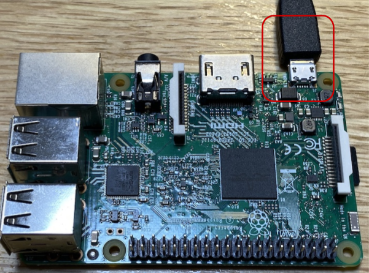
しばらく経過(約1~2分)すると macOS もしくは Windows 10 から Raspberry Pi へリモートログイン出来るようになります。
SSH リモートログインの方法
Windows の場合
スタートメニューから「コマンドプロンプト」を起動します。
コマンドプロンプトで以下のように入力して実行します。
ssh pi@raspberrypi.local
Are you sure you want to continue connecting (yes/no)?との問いには yes と入力します。- 初期パスワードは Raspbian のドキュメント に記載されていますので、それを利用してログインしてください。
macOS の場合
［Finder］>［アプリケーション］>［ユーティリティ］>［ターミナル］を起動します。
Terminal.app で以下のように入力して実行します。
ssh pi@raspberrypi.local
Are you sure you want to continue connecting (yes/no)?との問いには yes と入力します。- 初期パスワードは Raspbian のドキュメント に記載されていますので、それを利用してログインしてください。
OS の最新化
以降は Windows、macOS 共通の作業です。
Raspberry Pi へ SSH リモートログインしたあと、Raspberry Pi 側で以下を実行します。
sudo timedatectl set-timezone Asia/Tokyo sudo apt update && sudo apt upgrade -y sudo systemctl reboot
最後の1行で再起動となります。
Raspberry Pi の 電源 を OFF
OS の最新化を行った後、再起動で Raspberry Pi の起動が確認出来たら、この後行うセンサーの取り付けのために電源を OFF とします。
電源を OFF にする場合は SSH リモートログインした後、Raspberry Pi 側で以下を実行します。
sudo systemctl poweroff
この後 1分ほど経過して緑色 LED の点滅が止んだら microUSB ケーブルを抜きます。これで OFF にできます。
超音波距離センサーへケーブルを接続する
Raspberry Pi と接続する
動作テストを行う
curl -O https://gist.githubusercontent.com/ma2shita/0569ab4717c49349889c9fbe1af25386/raw/bda9390e8792045d3dd73d5db1f800f6dca8de34/sensor_test.py python2 sensor_test.py
pi@raspberrypi:~ $ python2 sensor_test.py 距離: 8.2 cm 距離: 8.3 cm 距離: 8.3 cm 距離: 8.2 cm 距離: 8.2 cm 距離: 12.2 cm 距離: 335.4 cm 距離: 337.5 cm 距離: 335.6 cm
【参考】sensor_test.py
#!/usr/bin/env python
# -*- coding: utf-8 -*-
import time
# 距離を読む関数
def read_distance():
# 必要なライブラリのインポート・設定
import RPi.GPIO as GPIO
# 使用するピンの設定
GPIO.setmode(GPIO.BOARD)
TRIG = 11 # ボード上の11番ピン(GPIO17)
ECHO = 13 # ボード上の13番ピン(GPIO27)
# ピンのモードをそれぞれ出力用と入力用に設定
GPIO.setup(TRIG,GPIO.OUT)
GPIO.setup(ECHO,GPIO.IN)
GPIO.output(TRIG, GPIO.LOW)
# TRIG に短いパルスを送る
GPIO.output(TRIG, GPIO.HIGH)
time.sleep(0.00001)
GPIO.output(TRIG, GPIO.LOW)
# ECHO ピンがHIGHになるのを待つ
signaloff = time.time()
while GPIO.input(ECHO) == GPIO.LOW:
signaloff = time.time()
# ECHO ピンがLOWになるのを待つ
signalon = signaloff
while time.time() < signaloff + 0.1:
if GPIO.input(ECHO) == GPIO.LOW:
signalon = time.time()
break
# GPIO を初期化しておく
GPIO.cleanup()
# 時刻の差から、物体までの往復の時間を求め、距離を計算する
timepassed = signalon - signaloff
distance = timepassed * 17000
# 500cm 以上の場合はノイズと判断する
if distance <= 500:
return distance
else:
return None
def main():
while True:
distance = read_distance()
if distance:
print "距離: %.1f cm" % distance
time.sleep(1)
if __name__ == "__main__":
main()aplay
sudo raspi-config
install mpg123
Raspberry Pi へ SSH リモートログインが出来ることを確認してください。以降は、特に断りを入れない場合は SSH リモートログイン後の Raspberry Pi 側で実行します。
setup_air.sh の実行
USB ドングル型モデムで SORACOM Air によるインターネット接続の一連の設定を自動化する setup_air.sh を実行します。
以下を実行してください。
curl -O https://soracom-files.s3.amazonaws.com/setup_air.sh
sudo bash setup_air.shUSB ドングル型モデム (AK-020) に SIM を取り付け、Raspberry Pi に接続する
以下の図を参考に取り付けてください。

Raspberry Pi の USB ポートはどこでも構いませんが、この後に接続する USB カメラとの位置で競合しないようにしてください。USB ドングル型モデム、USB カメラ共に Raspberry Pi の電源が ON 状態でもいつでも抜き挿し可能です。
接続を確認する
USB ドングル型モデムの LED を見ながら接続状態になったのを見計らって、以下を実行します。
ping -c 4 pong.soracom.ioこの時、期待される出力は以下の通りです。
PING pong.soracom.io (100.127.100.127) 56(84) bytes of data.
64 bytes from 100.127.100.127 (100.127.100.127): icmp_seq=1 ttl=64 time=75.6 ms
64 bytes from 100.127.100.127 (100.127.100.127): icmp_seq=2 ttl=64 time=58.8 ms
64 bytes from 100.127.100.127 (100.127.100.127): icmp_seq=3 ttl=64 time=55.4 ms
64 bytes from 100.127.100.127 (100.127.100.127): icmp_seq=4 ttl=64 time=43.4 msこれで Raspberry Pi から SORACOM Air を通じてインターネット接続が可能になりました。

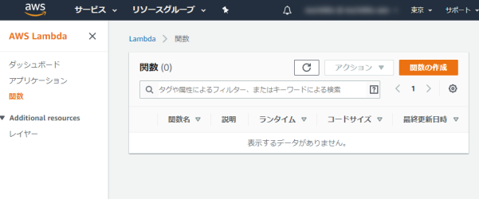
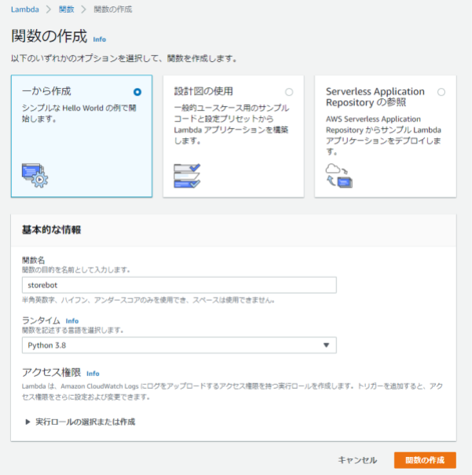
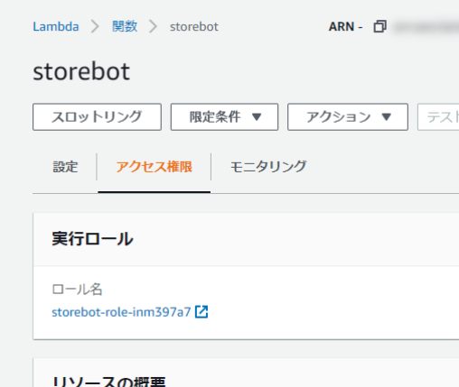
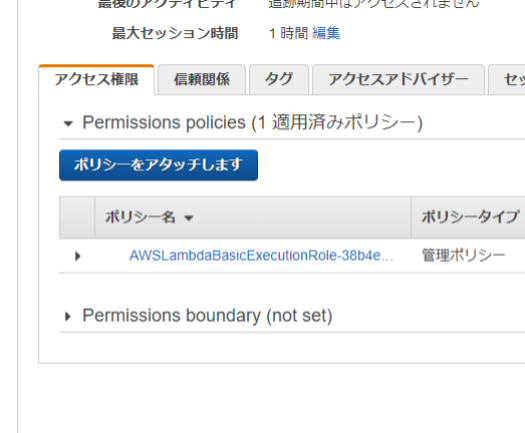

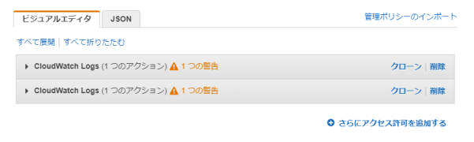
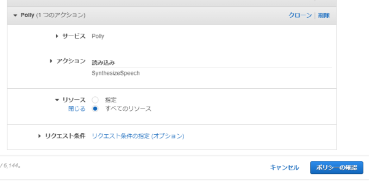
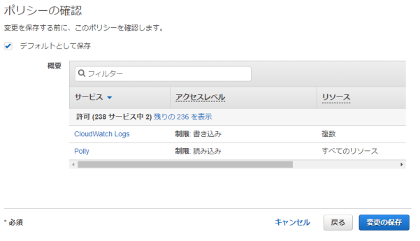
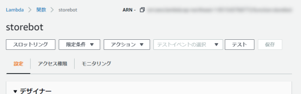
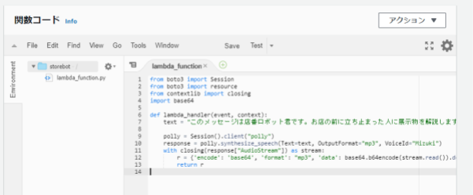
storebot (Lambda 関数)
from boto3 import Session
from boto3 import resource
from contextlib import closing
import base64
def lambda_handler(event, context):
text = "こんにちは、このメッセージは店番ロボット君です。お店の前に立ち止まった人に展示物を解説します。実際はテキストを動的に作ったり、Amazon Sスリーを経由して受け渡すのが良いでしょう。"
polly = Session().client("polly")
response = polly.synthesize_speech(Text=text, OutputFormat="mp3", VoiceId="Mizuki")
with closing(response["AudioStream"]) as stream:
r = {'encode': 'base64', 'format': "mp3", 'data': base64.b64encode(stream.read()).decode('utf-8')}
return r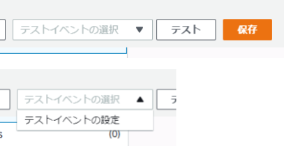
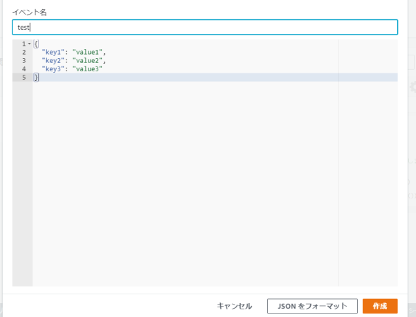
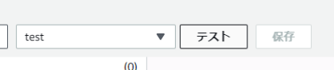
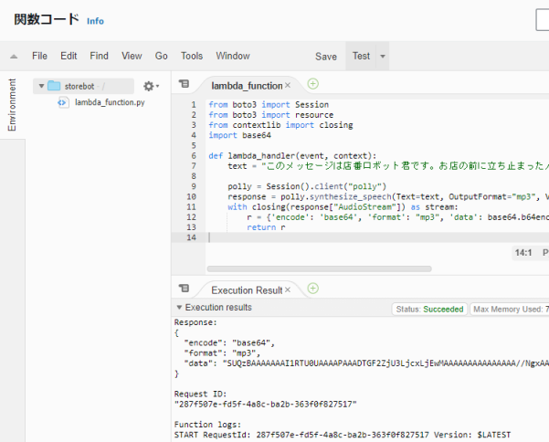
考えられるミス
コード貼り付け
IAM設定
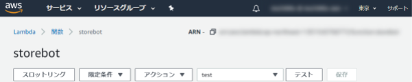

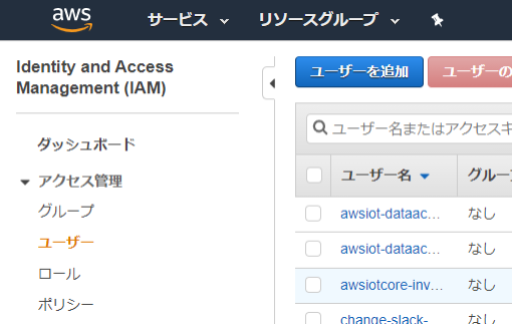
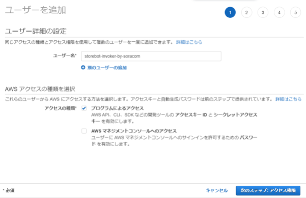
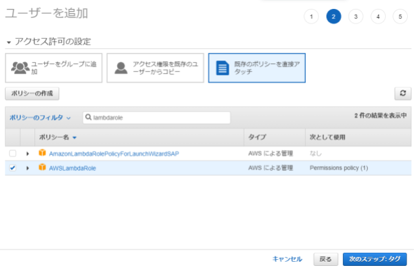

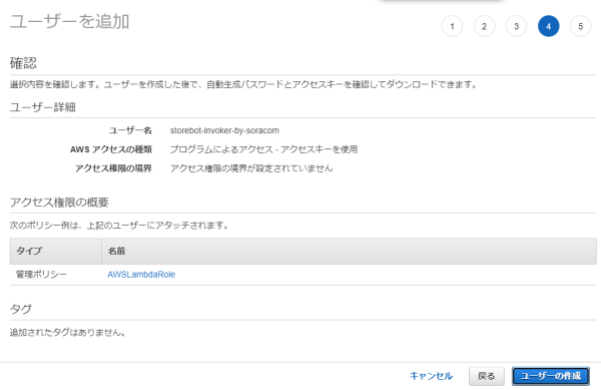
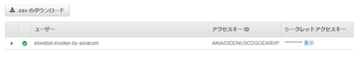
SORACOM Funk と AWS Lambda の連携設定をテストする
curl -O https://gist.githubusercontent.com/ma2shita/a7f2a0acf9b1a7f43c360e1371aadaed/raw/b07e0ad0b386177eb22ad9734a0f2c1a12c1bb15/soracom_funk_test.py python2 soracom_funk_test.py
pi@raspberrypi:~ $ python2 soracom_funk_test.py
200
High Performance MPEG 1.0/2.0/2.5 Audio Player for Layers 1, 2 and 3
version 1.25.10; written and copyright by Michael Hipp and others
free software (LGPL) without any warranty but with best wishes
Playing MPEG stream 1 of 1: - ...
MPEG 2.0 L III cbr48 22050 mono
[0:15] Decoding of - finished.
【参考】soracom_funk_test.py
#!/usr/bin/env python
# -*- coding: utf-8 -*-
import urllib2
import json
import base64
from subprocess import Popen, PIPE
def main():
headers = {'Content-Type': 'application/json'}
payload = json.dumps({})
response = urllib2.urlopen(urllib2.Request('http://uni.soracom.io', payload, headers))
print(response.getcode())
body = json.loads(response.read())
mp3data = base64.b64decode(body['data'])
cp = Popen(['mpg123', '-'], stdin=PIPE)
cp.communicate(input=mp3data)
if __name__ == "__main__":
main()curl -O https://gist.githubusercontent.com/ma2shita/e7f5d72c7592e8eb09adf92dcdf4310c/raw/2cd2a5eeb7af3ac144671c8bf5e967438c683e3e/storebot.py python2 storebot.py
pi@raspberrypi:~ $ python2 storebot.py
距離: 336.2 cm
0
距離: 336.6 cm
0
距離: 334.9 cm
0
距離: 19.6 cm
0
距離: 20.6 cm
1
距離: 20.5 cm
2
距離: 20.6 cm
3
距離: 20.5 cm
4
距離: 20.6 cm
200
High Performance MPEG 1.0/2.0/2.5 Audio Player for Layers 1, 2 and 3
version 1.25.10; written and copyright by Michael Hipp and others
free software (LGPL) without any warranty but with best wishes
Playing MPEG stream 1 of 1: - ...
MPEG 2.0 L III cbr48 22050 mono
[0:15] Decoding of - finished.
0
距離: 335.4 cm
0
距離: 335.9 cm
0
距離: 335.7 cm
【参考】storebot.py
#!/usr/bin/env python
# -*- coding: utf-8 -*-
MIN_DISTANCE_CM = 20
MAX_DISTANCE_CM = 100
STAY_COUNT = 5
import time
# 距離を読む関数
def read_distance():
# 必要なライブラリのインポート・設定
import RPi.GPIO as GPIO
# 使用するピンの設定
GPIO.setmode(GPIO.BOARD)
TRIG = 11 # ボード上の11番ピン(GPIO17)
ECHO = 13 # ボード上の13番ピン(GPIO27)
# ピンのモードをそれぞれ出力用と入力用に設定
GPIO.setup(TRIG,GPIO.OUT)
GPIO.setup(ECHO,GPIO.IN)
GPIO.output(TRIG, GPIO.LOW)
# TRIG に短いパルスを送る
GPIO.output(TRIG, GPIO.HIGH)
time.sleep(0.00001)
GPIO.output(TRIG, GPIO.LOW)
# ECHO ピンがHIGHになるのを待つ
signaloff = time.time()
while GPIO.input(ECHO) == GPIO.LOW:
signaloff = time.time()
# ECHO ピンがLOWになるのを待つ
signalon = signaloff
while time.time() < signaloff + 0.1:
if GPIO.input(ECHO) == GPIO.LOW:
signalon = time.time()
break
# GPIO を初期化しておく
GPIO.cleanup()
# 時刻の差から、物体までの往復の時間を求め、距離を計算する
timepassed = signalon - signaloff
distance = timepassed * 17000
# 500cm 以上の場合はノイズと判断する
if distance <= 500:
return distance
else:
return None
import urllib2
import json
import base64
from subprocess import Popen, PIPE
def main():
cnt = 0
while True:
distance = read_distance()
if distance:
print "距離: %.1f cm" % distance
if MIN_DISTANCE_CM <= distance and distance <= MAX_DISTANCE_CM:
cnt += 1
else:
cnt = 0
if cnt > STAY_COUNT - 1:
cnt = 0
headers = {'Content-Type': 'application/json'}
payload = json.dumps({})
response = urllib2.urlopen(urllib2.Request('http://uni.soracom.io', payload, headers))
print(response.getcode())
body = json.loads(response.read())
mp3data = base64.b64decode(body['data'])
cp = Popen(['mpg123', '-'], stdin=PIPE)
cp.communicate(input=mp3data)
print(cnt)
time.sleep(1)
if __name__ == "__main__":
main()curl -O https://gist.githubusercontent.com/ma2shita/4dfe0f4da1ecec963190be6e8e474990/raw/a9d640ae1797eb642bc96e23cc47340a0c983f97/storebot.service systemctl --user enable $PWD/storebot.service systemctl --user start storebot.service journalctl -n 10
最後の journalctl で期待される出力は以下の通りです。
Aug 31 04:56:50 raspberrypi systemd[575]: Started Storebot.py auto start.
Aug 31 04:56:50 raspberrypi python2[5269]: 0
Aug 31 04:56:51 raspberrypi python2[5269]: 距離: 338.2 cm
Aug 31 04:56:51 raspberrypi python2[5269]: 0
Aug 31 04:56:52 raspberrypi python2[5269]: 距離: 337.0 cm
Aug 31 04:56:52 raspberrypi python2[5269]: 0
Aug 31 04:56:54 raspberrypi python2[5269]: 距離: 337.8 cm
Aug 31 04:56:54 raspberrypi python2[5269]: 0